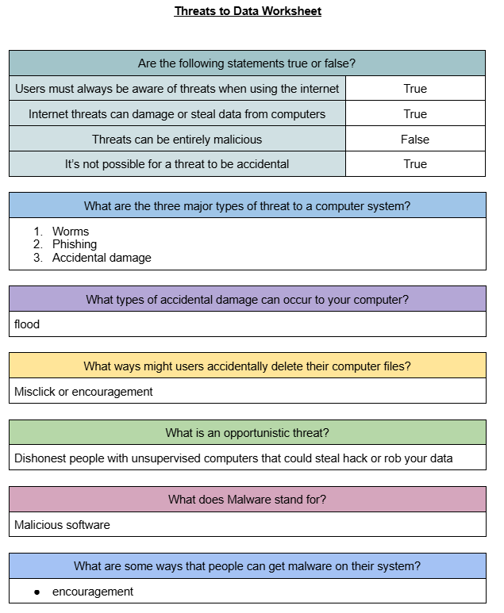

<!DOCTYPE html>

<html>
	<head>
		<title> | Digital Portfolio | </title>
		<style>
			body {
				font-family: Segoe, "Segoe UI", "DejaVu Sans", "Trebuchet MS", Verdana, "sans-serif";
				background-color: #C5DCFC;
				margin: 0 auto;
				padding: 20px;
				border-style: inset;
				border-color: darkblue;
				border-bottom: 200px;
				max-width: 1000px;
				overflow: auto;
			}
			h1 {
				color: #44763E;	
			}
			p {
				color: #161716;
			}
			
			h1 {
				text-align: center;
			}
			
			img {
				border-style: outset;
				border-color: darkblue;
			}
			
			img#top {
				width: 100%;
				height: auto;
				display: block;
				margin-bottom: 20px;
			}			a:link {color: #689F38}
			a:visited {color: #234416}
			a:hover {color: #66BB6A}			a:link {color: #689F38}
			a:visited {color: #234416}
			a:hover {color: #66BB6A}
			
			.text {
				max-width: 600px;
				height: 300px;
				padding: 50px;
				border: 2px solid #235099;
				box-sizing: border-box;
				display: block;
				font-size: 16px;
				resize: none;
				align-self: center;
				margin: 0 auto;
				gap: 20px;
				
			}
			
			

			.center {
					display: grid;
					place-items: center;
					height: 45vh;
			}
			
			a {
				font-size: 26px;
			}
		</style>
	</head>
</html>

<body>
		
		<p align="center">
			<a href="index.html">Homepage</a>
			<a href="u1.html">Unit 1</a>
			<a href="u2.html">Unit 2</a>
			<a href="u8.html">Unit 8</a>
			<a href="u13.html">Unit 13</a>
			<a href="u14.html">Unit 14</a>
			<a href="u17.html">Unit 17</a>
		</p>
	<h1> Unit 1 | Online World </h1>
	
	<p align="center" class="text">Unit 1 is a external assessment for this course. This covers how the internet works in the background, online services and communication, E-commerce, Online security and the Digital Footprint. My time when doing this unit was a bit complicated, since there was a few things that I have never learnt at all, such as packet switching, backups, more security and a little bit on the internet. However, this unit is still pretty interesting to learn in my opinion. I have learnt a ton of stuff and I can't wait to learn more. </p>
	
<div class="center">

<p class="text" style="text-align: center; text-size-adjust: auto;"> This is one worksheet example of Unit 1. Inside of that screenshot is where i learn what could threaten the data on the internet. This specific worksheet covers the internet security that happens across the internet and it could happen to anyone.</p>

	</div>
	
<p class="center, text">If you want to learn a bit more on the internet, this <a href="https://www.knowitallninja.com/" target="_blank" style="text-size: 16px;">revision link </a> helps you understand pretty well about the Internet!</p>


</body>